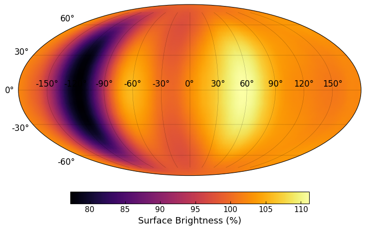

Mar 2026 — Sep 2026
Modelling the high-resolution spectrum of a directly-imaged exoplanet
Observatoire de la Côte d’Azur · Nice, France
I simulated the high-resolution spectra of the planetary-mass companion VHS 1256 b to investigate its time-variable atmospheric dynamics.
Advisor: Prof. Vivien Parmentier
